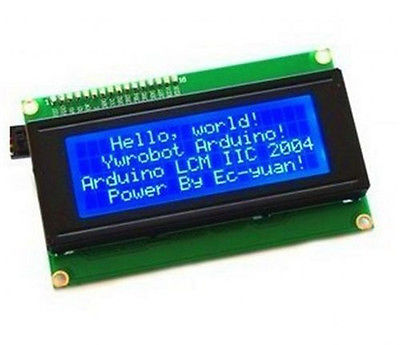

I2C 20x4 LCD Module Display: 4,81$

I2C 20x4 LCD Module Display
PN532 NFC Precise RFID: 7.92$
PN532 NFC Precise RFID
NXP PN532 NFC RFID Module V3: 5.33$

NXP PN532 NFC V3 RFID
RC522 RFID: 1.84$
RC522 RFID
La primera part del projecte PBE telemàtica consisteix en configurar i programar dispositius Internet of Things (Raspberry Pi 3B+ i perifèrics). És important, encara que no obligatori, que cada alumne disposi de material per continuar el treball fora del Lab ja que es pressuposa una dedicació d'aprenentatge autònom del projecte de Lab de 3,5h. El material de l'assignatura NO es deixa fora del Laboratori, excepte alguns items concrets. Aquells alumnes que disposin de material propi podran aprofitar molt més l'assignatura que no pas aquells que sols puguin usar el material en hores de Lab.
S'incentiva per tant que l'alumne disposi de material propi. Això comporta una despesa per l'alumne. El material el podem classificar entre genèric, apte per més projectes (Raspberry Pi 3B+) i específic (perifèrics). Encara que tots dos materials són aprofitables i interessants per altres projectes, és clarament més útil per l'alumne el Raspberry Pi 3B+. Es facilitara des de l'assignatura un fòrum electrònic de compra-venda de material per alumnes que hagin cursat l'assignatura, per tal que pugin vendre material a alumnes del proper quadrimestre, si així ho decideixen.
El projecte de Laboratori consisteix en el desenvolupament d'una aplicació de comunicacions en l'àmbit d'Internet of Things (Raspberry Pi 3B+ i perifèrics) i arquitectura Client/Servidor. El Servidor accedeix a una Base de Dades i els clients són mòbils (Android) i web.
El material més important és un Kit Raspberry Pi 3B+ format per la RPi3, la targeta de memòria, l'alimentador i el lector de targetes USB-microSD. Alguns preus orientatius de MediaMarkt (lògicament es pot comprar on es vulgui):
Val tornar a repetir que aquesta despesa mereix la pena a nivell personal, ja que un RPi3 és un ordinador a tots els efectes que es pot fer servir de múltiples formes: com ordinador connectat a la TV, com mini-PC d'interconnexió amb perifèrics, com adquisició de senyals, etc.
En la part de IoT del projecte es programarà el RPi3 amb perifèrics: lectors de radiofreqüència (RFIDs) i displays alfanumèrics. La idea és que cada alumne disposi d'una RPi3 i un perifèric. El projecte es realitzarà en grups de 4/5 alumnes de forma que cada grup disposarà de 4/5 RPi3, un display i 3/4 RFIDs diferents. Els perifèrics resulten econòmics si es compren en tendes online. S'han de comprar amb antelació ja que la seva compra pot trigar 1,5 mesos. Els perifèrics amb referència a una botiga amb bona relació qualitat/preu són els següents (de nou es pot comprar on es vulgui):
I2C 20x4 LCD Module Display: 4,81$
I2C 20x4 LCD Module Display
PN532 NFC Precise RFID: 7.92$
PN532 NFC Precise RFID
NXP PN532 NFC RFID Module V3: 5.33$
NXP PN532 NFC V3 RFID
RC522 RFID: 1.84$
RC522 RFID
Per soldar els headers de pins a la placa cal un soldador de punta molt fina. Calen també cables dupont mascle-femella per el display i femella-femella per els RFIDs. Es pot comprar un joc de cables per grup com aquests: 3.23$
40x3 cables dupont variats
Convé que us agrupeu per grups de quatre/cinc alumnes de forma que cada alumne tingui una RPi3 i un display (obligatori) o un dels 3 RFIDs (cada alumne un de diferent). Proporcionaré a cada grup un RFID USB diferent dels mencionats. Cada alumne haurà de configurar i programar el display/RFID amb la RPi3 en un llenguatge de scripting (Ruby o Python) com a treball individual. En el display s'haurà de visualitzar un missatge i els RFIDs hauran de llegir el user identifier (uid) (un sencer de 32bits) d'una targeta MIFARE S50 13,56MHz (o be de la targeta/carnet UPC que és compatible)
Convé portar com a mínim a partir del primer dia de classe el Kit Raspberry Pi 3B+, cables dupont i protoboard per els que programeu el display. Apart del material de l'assignatura que es deixa en hores de Lab, tindré 3 PN532 NFC Precise RFID a la venda (7€). El nombre d'alumnes del Lab PBE telemàtica està limitat a 20 places.
Francesc Oller